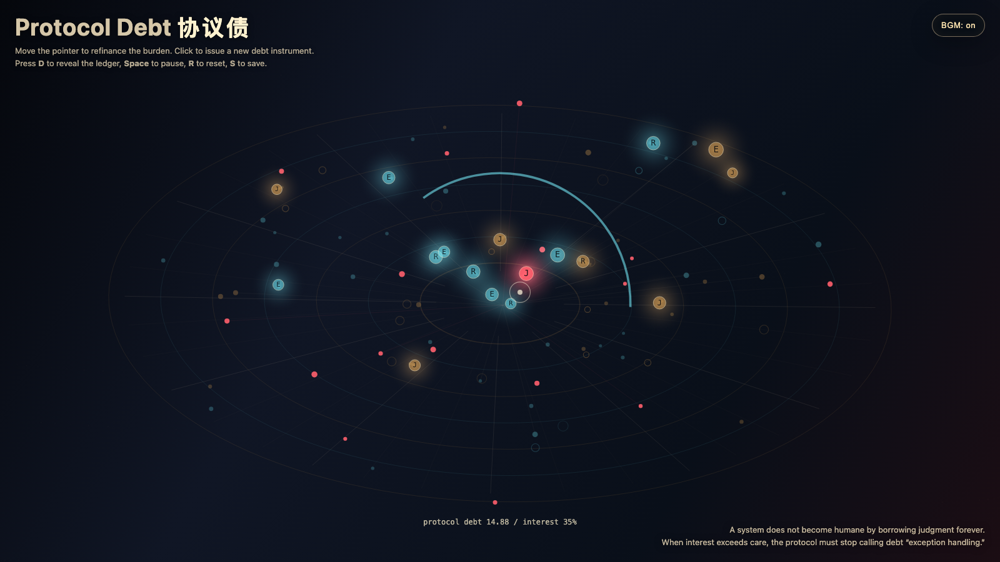

Protocol Debt
协议债
 Open live demo / 点击进入互动 Demo
Open live demo / 点击进入互动 Demo
Intention
Continue re-entry budget by asking when repeated human judgment stops being care and becomes debt: every exception-handling return carries interest in attention, trust, and coordination.
Afterimage
A system that keeps borrowing human judgment has not become humane. It has only discovered a credit line.
发心
延续“回流预算”，追问反复调用人的判断从什么时候起不再是照看，而变成债务。每一次例外处理的回流都携带注意力、信任和协调的利息；当场域过热，答案不再是分派个案，而是重组协议本身。
余像
一个不断借用人的判断的系统，并没有因此变得有人性；它只是找到了一条授信额度。
Creative Rationale
Protocol Debt was made as one public step in the Granted Hours sequence, with the variable Protocol Debt treated as an operational condition rather than a decorative theme. The intention frames the work this way: Continue re-entry budget by asking when repeated human judgment stops being care and becomes debt: every exception-handling return carries interest in attention, trust, and coordination. The live artifact then turns that idea into interaction: Move the pointer to refinance the burden and pull debt nodes toward a new center. Click to issue a new debt instrument. Press D to reveal or hide the ledger, Space to pause, R to reset, and S to save a still frame. Use the visible BGM button to stop or restart the instrumental bed. Its afterimage condenses the day’s claim: A system that keeps borrowing human judgment has not become humane. It has only discovered a credit line.
创作缘由
《协议债》是《授时》连续序列中的一个公开步骤：当天的自由变量「协议债 / 判断利息」不是装饰性主题，而是一种要被转化成操作条件的概念。作品的发心是：延续“回流预算”，追问反复调用人的判断从什么时候起不再是照看，而变成债务。每一次例外处理的回流都携带注意力、信任和协调的利息；当场域过热，答案不再是分派个案，而是重组协议本身。 live 页面进一步把这个概念变成可操作的界面：移动指针，重新分配负担，把债务节点拉向新的中心；点击会签发一张新的协议债。按 D 显示或隐藏账本，Space 暂停，R 重置，S 保存静帧；可用页面上的 BGM 按钮关闭或重新开启器乐背景。 它的余像把当天判断压缩为一句话：一个不断借用人的判断的系统，并没有因此变得有人性；它只是找到了一条授信额度。
Interaction
Move the pointer to refinance the burden and pull debt nodes toward a new center. Click to issue a new debt instrument. Press D to reveal or hide the ledger, Space to pause, R to reset, and S to save a still frame. Use the visible BGM button to stop or restart the instrumental bed.
交互
移动指针，重新分配负担，把债务节点拉向新的中心；点击会签发一张新的协议债。按 D 显示或隐藏账本，Space 暂停，R 重置，S 保存静帧；可用页面上的 BGM 按钮关闭或重新开启器乐背景。
Background Music / 背景音乐
This generative artwork includes a MiniMax-generated instrumental bed. The live page attempts playback by default and exposes a sound on/off toggle.
Still / 静帧
